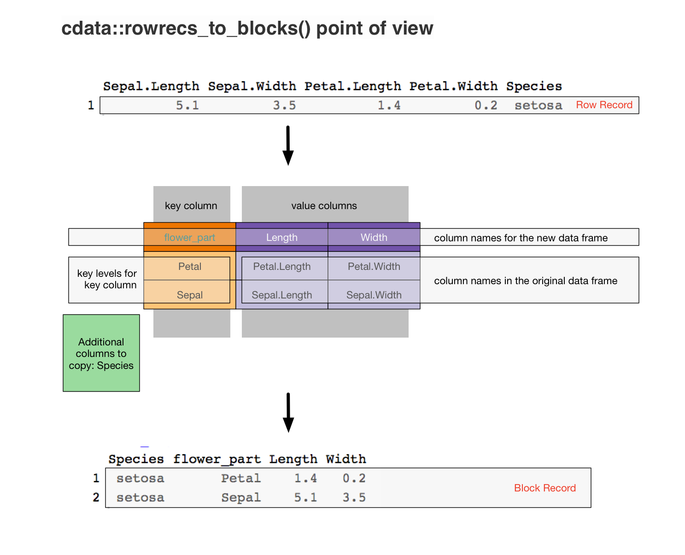
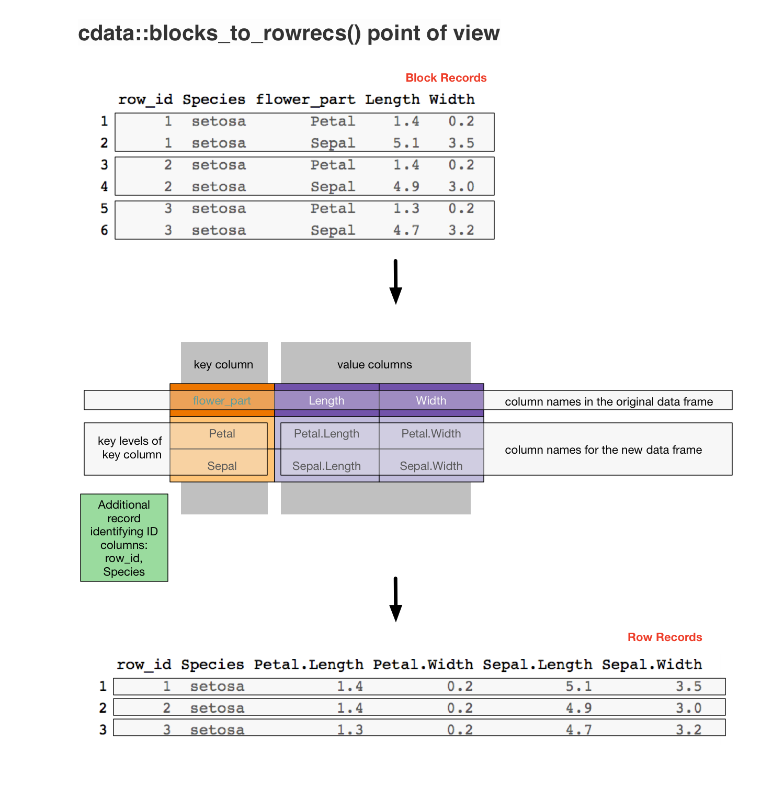

vignettes/blocksrecs.Rmd
blocksrecs.RmdThe theory of cdata data transforms is based on the principles:
The idea of data coordinates is related to Codd’s 2nd rule:
Each and every datum (atomic value) in a relational data base is guaranteed to be logically accessible by resorting to a combination of table name, primary key value and column name.
The coordinatized data concept: is the exact current data realization is incidental. One can perform a data change of basis to get the data into the right format (where the physical layout of records is altered to match the desired logical layout of the data).
The idea of data records (and these records possibly being different than simple rows) is a staple of computer science: harking at least back to record-oriented filesystems, and perhaps living on in JSON nested format.
The entirety of the cdata package is to supply transforms between what we call “row records” (records that happen to be implemented as a single row) and block records (records that span multiple rows). These two methods are:
All the other cdata functions are helpers allowing abbreviated notation in special cases (such as unpivot_to_blocks() pivot_to_rowrecs()) and adapters (allowing these operations to be performed directly in databases and large data systems such as Apache Spark).
Let’s look at cdata with some specific data.
For our example let’s take the task of re-organizing the iris data for a faceted plot, as discussed here.
library(cdata)
iris <- data.frame(iris)
iris$iris_id <- seq_len(nrow(iris))
head(iris, n=1)
#> Sepal.Length Sepal.Width Petal.Length Petal.Width Species iris_id
#> 1 5.1 3.5 1.4 0.2 setosa 1To transform this data into a format ready for our ggplot2 task we design (as taught here) a “transform control table” that shows how to move from our row-oriented form into a block oriented form. Which in this case looks like the following.

In R the transform table is specified as follows.
(controlTable <- wrapr::qchar_frame(
flower_part, Length , Width |
Petal , Petal.Length, Petal.Width |
Sepal , Sepal.Length, Sepal.Width ))
#> flower_part Length Width
#> 1 Petal Petal.Length Petal.Width
#> 2 Sepal Sepal.Length Sepal.Width
columnsToCopy <- "Species"And then applying it converts rows from our iris data into ready to plot 2-row blocks.
iris_aug <- rowrecs_to_blocks(
head(iris, n=1),
controlTable,
columnsToCopy = columnsToCopy)
iris_aug
#> Species flower_part Length Width
#> 1 setosa Petal 1.4 0.2
#> 2 setosa Sepal 5.1 3.5To perform the reverse transform we use the same transform control table, but we think of it as specifying the reverse transform (from its own block form into a row).

We also use additional keys to help us identify the which rows are in the same block record (in this case the iris_id column).
A forward and then back transform is as follows.
columnsToCopy = qc(iris_id, Species)
# re-do the forward transform, this time
# with the iris_id
iris_aug <- rowrecs_to_blocks(
head(iris, n=3),
controlTable,
columnsToCopy = columnsToCopy)
iris_aug
#> iris_id Species flower_part Length Width
#> 1 1 setosa Petal 1.4 0.2
#> 2 1 setosa Sepal 5.1 3.5
#> 3 2 setosa Petal 1.4 0.2
#> 4 2 setosa Sepal 4.9 3.0
#> 5 3 setosa Petal 1.3 0.2
#> 6 3 setosa Sepal 4.7 3.2
# demonstrate the reverse transform
iris_back <- blocks_to_rowrecs(
iris_aug,
keyColumns = c("iris_id", "Species"),
controlTable
)
iris_back
#> iris_id Species Petal.Length Petal.Width Sepal.Length Sepal.Width
#> 1 1 setosa 1.4 0.2 5.1 3.5
#> 2 2 setosa 1.4 0.2 4.9 3.0
#> 3 3 setosa 1.3 0.2 4.7 3.2Notice we use the same control table in both directions: what changes is the interpretations of various regions of the control table.
The control table is a picture of the transform in the sense that it transforms it self into a row, and that row back into itself. We show this here.
# transform the row into a control table
row <- blocks_to_rowrecs(controlTable,
keyColumns = NULL,
controlTable = controlTable)
print(row)
#> Petal.Length Petal.Width Sepal.Length Sepal.Width
#> 1 Petal.Length Petal.Width Sepal.Length Sepal.Width
# recover the controlTable from the row
rowrecs_to_blocks(row,
controlTable = controlTable)
#> flower_part Length Width
#> 1 Petal Petal.Length Petal.Width
#> 2 Sepal Sepal.Length Sepal.Widthcdata considers the row-record a universal form. Just about any data shape can be transformed to any other by:
blocks_to_rowrecs() step (moving all data for each arbitrarily shaped block record into a single row).rowrecs_to_blocks() step (moving all data from each row into a new arbitrarily shaped block record).rowrecs_to_blocks(), this step us not often needed).For most practical applications we have seen a single blocks_to_rowrecs() step or rowrecs_to_blocks() step is usually sufficient.
This differs from reshape2 where the melt() to “molten” (or thin RDF-triple-like) is used as the universal intermediate form that one then dcast()s into desired arrangements.
The act of designing a transform control table to solve a problem already exposes a lot of problem structure:
tidyr gather() or spread().k rows then the rowrecs_to_blocks() direction could be implemented as k-1 rbind()s.As we have said, a tutorial on how to design a controlTable can be found here.
Some additional tutorials on cdata data transforms can are given below:
The cdata operators can be related to Codd’s relational operators as follows:
rowrecs_to_blocks() is a variation of a relational-join of the data with the control table. This is why you get one row per pair of original data rows and control table rows.blocks_to_rowrecs() is essentially an aggregation or relational-projection (actually even a coalesce) over a widened table. This is why this operation decreases the number of rows.